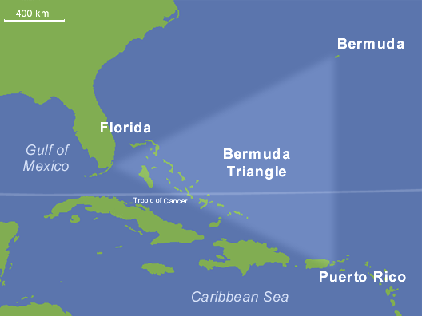

The Bermuda Triangle, also known as the Devil's Triangle, is a loosely defined area in the North Atlantic Ocean roughly bounded by Florida, Bermuda, and Puerto Rico. Since the mid-20th century, it has been the focus of an urban legend that suggests that numerous aircraft, ships, and people have mysteriously disappeared there. However, extensive investigations by reputable sources, including the U.S. government and scientific organizations, have found no evidence of unusual activity, with reported incidents attributed to natural phenomena, human error, and misinterpretation.

| 1918 USS Cyclops | The disappearance of the plane 19 in 1945 | Sinking of HMS Atalanta in 1880 |
|---|---|---|
| 306 dead | 14 missing | 281 dead |